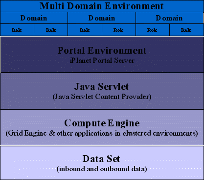
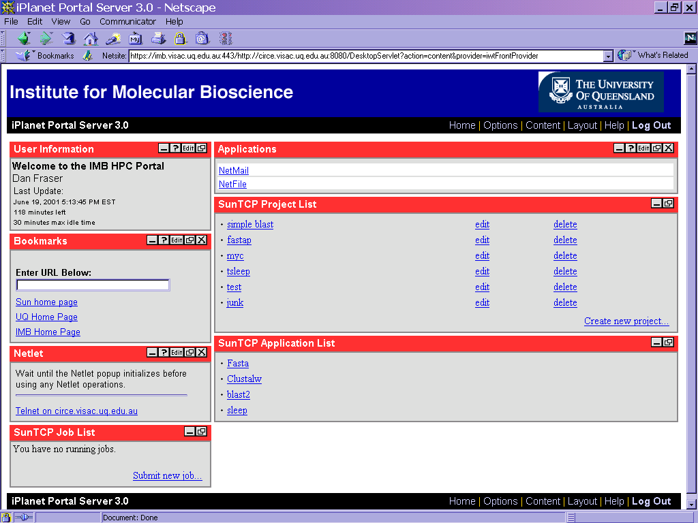

Technical Computing Portal
Installation Guide
Dan.Fraser@Sun.COM
Ron.Selva@Sun.COM
Note 1: It is anticipated that the Technical
Computing Portal will be renamed the Sun Grid Portal . The final
approval to rename the Technical Computing Portal has not yet been granted.
For the purposes of this installation guide, it is assumed that Sun Grid
Portal will become the official name.
Note 2: To be consistent with Sun policies
regarding third party, open source, or shareware software, and to comply
with the Sun open source/shareware review and approval process, we have
removed both the O'Reilly Servlet and the VNC shareware software from the
Sun Grid Portal distribution. This installation guide has been modified
to include instructions for downloading the software from the respective
sites and for the specific steps to be followed for incorporating the software
for use with the Sun Grid Portal. Please refer to Step 3 of the Installation
Procedure (Sun Grid Portal Integration (Glue) Package) for additional details.
Table of Contents
Introduction &
Technical Acknowledgments
The Sun Grid Portal (SGP) solution enables
organizations to provide flexible, secure and managed access to High Performance
Computing resources. The solution is designed to be implemented in a variety
of environments, from University and Research Institutes to Commercial
organizations making use of HPC technologies for aerospace, automotive,
manufacturing and other compute intensive applications. The solution enables
these resources to be harnessed and taken to the Internet in a secure,
accountable manner.A high level architectural view of this solution is
shown in illustration 1.

Illustration 1
The illustration details the component layers
that need to be integrated in the solution.
We would like to especially thank those who
made significant technical contributions to the SGP:
David Bunker for the practical implementation
of SunONE Portal Server with the SGP code and significant documentation
contributions.
Solution Components Detail
Data Set
The Data Set layer represents the information that is processed by the
compute engine. It includes the raw data that is accessed by applications
for compare and process operations, the input arguments and parameters
and the output from the processing commands.
Compute Engine
The Compute Engine layer is essentially Grid Engine. Grid Engine is a distributed
application processing solution from Sun Microsystems. Grid Engine controls
the submission of jobs to the Grid Cluster and Grid Cells (Sub Clusters),
the distribution of jobs to execution hosts within the cluster and the
administration, management and auditing of these jobs to and from processing
queues. Grid Engine can be integrated with other applications used in the
processing of compute intensive problems.
Java Servlet
The Java Servlets used in this solution
have been created by Sun Microsystems to provide an interface between the
Grid Engine and the SunONE Portal Server. The Java Servlets used in this
guide are SunTCP and AdminTCP and are provided with legal
conditions as detailed in the source code. These applications interact
with Grid Engine's functions and SunONE Portal Server's APIs to provide
Content Provider windows to the portal environment.
Portal Environment
The Portal Environment is provided using the SunONE Portal Server. Portal
Server provides the capabilities of personalization, customization, security
and aggregation to a Java enabled web browser. Portal Server can be deployed
in a multi-domain scenario, utilizing varying authentication methods and
role functions within each domain.
Multi- Domain Environment
The Multi-Domain Environment enables organizations to provision specific
content, manage multiple authentication and security structures and create
a personalized and customizable user experience with consistent look and
feel within the domains. Within domains user roles are implemented allowing
varying security levels and responsibilities to be assigned to users within
the portal environment. In this solution these roles are used to differentiate
between administrators, support personnel and end users. The administrative
controls allowed within a domain provide a level of delegated administration
to users of the solution. The Portal Server, it's domains and the roles
and users within the domain can be customized at all levels, allowing organizations
to provision content and services at a certain level and have those functions
"inherited" by lower level categories. For example an application could
be provisioned at the portal server level and this application could then
be made available to all domains, roles and users within the portal environment.
Illustration 2 represents graphically the portal domain structure.

Illustration 2
Illustration 2 shows the flexibility of the
portal environment to provision domains each with a different look and
feel and authentication method; roles to perform specific tasks within
the portal framework with different authentication methods; sub-roles;
and users within the role structure with differing authentication methods.
Installation Procedure
Installation Procedure Summary
We will assume that the computer hardware, base operating system (including
latest patches) and network configuration has been completed.
Step 1: Install Grid Engine (and Sun ClusterTools w/ loose integration
for MPI support).
Step 2: Install SunONE Portal Server.
Step 3: Install the Sun Grid Portal Integration Package.
Step 4: Adjust the configuration of SunONE Portal Server.
Step 5: Test the Sun Grid Portal
Step 6: Register new applications with Sun Grid Portal
Step 1: Grid Engine
Download the latest version of Grid Engine from http://www.sun.com/gridware.
Follow
the installation instructions. The default queues and the default cell
will work fine.
If
MPI jobs will be run through the portal:
Download and install the latest version of the HPC ClusterTools software
at http://supportforum.sun.com/clustertools.
Create
a loose integration for HPC ClusterTools and Grid Engine. The Loose Integration
package is a part of the Grid Engine download (version 5.3 or later) and
may be found under the directory HPC_GE_Integration. Follow the
directions in the README file.
Step 2: SunONE Portal Server
Download SunONE Portal Server 3.0, SP3A
(or later release) from
http://www.iplanet.com.
The SP3A (or later) release is required for X-windows support in SGP. Note,
however, that SGP has not yet been integrated with SunONE Portal Server
6.0, although that work is in progress. Since the exact questions
that are asked when installing SunONE Portal Server vary with the type
and version of installation, the following is only a general guide. Most
demo users can take all the defaults except for the
root of the profile
role tree as indicated below. Using the
ipsinstall script, first
install the Server component, then if desired install the Gateway component.
These can be installed on the same system or different systems. The Gateway
must be installed for X-windows graphics support, but other SGP functions
work fine without a gateway. Without a Gateway, the access page uses the
ordinary "http://...." instead of "https://....".
When
asked if this will be an open Portal install this is SunONE Portal
Server lingo that means without a gateway. Some have found it simpler to
install without a gateway and add a gateway later if desired (specifically
for using the X-windows graphics capability.) The default is to use a gateway,
but make sure to install the gateway after the server has been installed.
If asked about using SSL connectivity
to the server, this refers only to the communications between the Server
and the Gateway. This may be required in ultra-sensitive environments,
but is not usually necessary. All external communication through the gateway
automatically uses SSL (i.e. https). When in doubt, take the default.
When asked about the
hostname,
sub-domain,
and
domain for the server (or gateway). The following examples apply:
mercury.sun.com
would have
mercury as the hostname, no subdomain (use . ) and
sun.com
as the domain. If the system were
mercury.iforce.sun.com, then
iforce
would be the sub-domain and
sun.com would be the domain name. These
names must be specified for both the server and gateway components. In
other words there must be a line in the
/etc/hosts file that links
both names such as the following:
129.146.60.220 scserv220 loghost scserv220.iforce.sun.com
(This must be done prior to beginning the SunONE Portal Server installation).
When specifying the root of the profile
role tree the default may be something like sun.com which is
unacceptable, since the SGP requires this name to be a valid username.
Here instead of the default, use suntcp. Whatever name is used however
must be the same when later installing the gateway.
Next, the user for the profile role
tree must be root. Take the default.
Next select 2 to begin installing
the gateway (unless this is not required). Be sure the root of tree
is the same name specified above, and that all corresponding domain names
match exactly.
Once
all components are installed you can test for a successful installation
by typing:
https://hostname.sub-domain.domain
or, for the example being used in this document:
https://mercury.sun.com
in
a browser window. (If there is no gateway, you can connect directly by
using http instead of https.) If you see the default SunONE
Portal Server screen, congratulations you can go on to step 3. If there
is an error, try restarting the SunONE Portal Server by typing:
# /etc/init.d/ipsserver start
# /etc/init.d/ipsgateway start
Then try opening the page again. If there is still an error, make sure
the proxies are turned off in the Browser, and try again. If there is still
no success, there was probably an error in the install and you will need
to reinstall everything. (Do not feel bad, most successful installations
have needed to reinstall the SunONE Portal Server & Gateway several
times.) You can also refer to the SunONE Portal Server documentation for
further information.
Finally, it is currently necessary to change the umask value
that is set in the /etc/init.d/ipsserver and /etc/init.d/ipsgateway
scripts
from the supplied value of 077 to a new value of 022.
Once this change has been made to these scripts, restart both the server
and gateway as described above.
Step
3: Sun Grid Portal Integration (Glue) Package.
The
following files will need to be downloaded before you start the Sun Grid
Portal installation process. For the purposes of this installation
guide, it will be assumed that all of these files will be downoaded into
the
/tmp directory.
First, download the Sun Grid Portal installation package that
you received from the SGP development team (gridportal.tar.gz).
Next, after carefully reading the
license conditions, download the O'Reilly Servlet package -
cos-27May2002.zip
- (or later version) from:
http://www.servlets.com/cos
Finally, download the VNC shareware software from:
http://www.uk.research.att.com/vnc/xvnc.html
To find the appropriate VNC files, select the Download option
on this Web page, carefully read the GNU General Public Licence conditions
and then check the Solaris 2.5 (SPARC) box and the
Java sources
(30K) box. Select Proceed to download. This should
result in the downloading of the two files:
vnc-3.3.3r2_sun4_sosV_5.5.tgz
vnc-3.3.3r2_javasrc.tgz
|
Become
root and create the SGP_ROOT installation directory
#
mkdir -p /export/GridPortal
(Note:
/export/GridPortal must be an NFS shared file system across all Grid Engine
nodes)
#
chmod 755 /export/GridPortal
#
SGE_ROOT=<where Grid Engine has been installed>
#
SGE_CELL=<Grid Engine sge_cell if not default cell>
#
COMMD_PORT=<Grid Engine commd port>
#
export SGE_ROOT SGE_CELL COMMD_PORT
#
cd /export/GridPortal
#
gzip -dc /tmp/gridportal.tar.gz | tar xvf -
(Prior
to the official open-source release of Sun Grid Portal, the gridportal.tar.gz
file includes a
directory named
infotext
that contains the infotext.tar
file, which is needed for environments
that have installed
early releases of Sun Grid Engine 5.3 or prior releases of Sun Grid Engine.
The required infotext
binaries were not supplied in these prior releases of Sun Grid Engine,
but
are needed for
the purposes of this Sun Grid Portal installation. Check the SGE_ROOT/utilbin
directory for
the presence of the
infotext
binaries in both the solaris
and solaris64
subdirectories.
If they are not
there, and the
gridportal.tar.gz
file contained them, please install them using the
following two
commands. Otherwise, skip to the cd
/tmp command below.)
# cd $SGE_ROOT/utilbin
# tar xvf /export/GridPortal/infotext/infotext.tar
# cd /tmp
# unzip cos-27May2002.zip lib/cos.jar
# cd /export/GridPortal
# gzip -dc /tmp/vnc-3.3.3r2_sun4_sosV_5.5.tgz
| tar xvf -
# cd vnc_sun4_sosV_5.5
# gzip -dc /tmp/vnc-3.3.3r2_javasrc.tgz | tar
xvf -
# cd ..
# vnc_patches/applyVncPatches
Note:
You will be asked by the install script below to supply the following
parameters:
O'Reilly servlet path - use /tmp/lib/cos.jar
assuming you followed the exact steps above
Vnc root directory - use /export/GridPortal/vnc_sun4_sosV_5.5
assuming you followed
the exact steps above
Grid Portal domain - for consistency with the nomenclature in this guide,
use suntcp
# ./install -gp
Installing
Grid Portal servlets
-------------------------------
We
will ask for
-
the O'Reilly servlet location
-
the SunONE Portal Server (iPS) root directory
- the Vnc root directory (optional)
-
the Grid Portal domain
The
Grid Portal is using the O'Reilly servlet cos.jar
The
version we used for testing is available as
http://www.servlets.com/cos/cos-27May2002.zip
Please
read the license conditions carefully and download
this
file. Then proceed by unzipping it, e.g. like this
%
cd /tmp
%
unzip cos-27May2002.zip lib/cos.jar
This
path must be entered here, e.g. /tmp/lib/cos.jar
Please
enter the O'Reilly servlet path >> /tmp/lib/cos.jar
Please
enter the iPS root directory ( default: /opt ) >> /opt
Do you want to use VNC >> y
Please enter the VNC root directory >> /export/GridPortal/vnc_sun4_sosV_5.5
Please
enter the Grid Portal domain >> suntcp
You
entered the following installation information
O'Reilly
servlet: /tmp/lib/cos.jar
Grid
Portal root: /export/GridPortal
iPS
install directory: /opt
VNC root directory: /export/GridPortal/vnc_sun4_sosV_5.5
Grid
Portal domain: suntcp
Do you want to use these parameters (y/n) [y]>>
The
Grid Portal servlets will now be installed. iPS is automatically restarted.
Do
you want to proceed (y/n) [y]>>
stopping
auth helpers ... done.
stopping
web server ... done.
stopping
directory server ... done.
stopping
gateway ... done.
No
change to /opt/netscape/server4/https-bilbo.Germany.Sun.COM/config/rules.properties
No
change to /opt/netscape/server4/https-bilbo.Germany.Sun.COM/config/jvm12.conf
Do
you want to install example applications (y/n) [y]>>
stopping
auth helpers ... done.
stopping
web server ... done.
stopping
directory server ... done.
starting
auth helpers ... done.
removing
/opt/netscape/directory4/slapd-bilbo/locks...done
starting
directory server ... done.
starting
web server ... done.
starting
gateway ... done.
Do
you want to install channels (y/n) [n]>>
The
installation has completed.
|
|
Every user that utilizes VNC for X-Windows
applications must change his/her environment settings. VNC is called from
the servlet with a
su - <user> -c vncserver
command and inherits the environment of the user. Add the following
to the user's environment (.cshrc or .profile or similar):
setenv SGP_ROOT /export/GridPortal
setenv VNC_ROOT $SGP_ROOT/vnc_sun4_sosV_5.5
or
export SGP_ROOT=/export/GridPortal
export VNC_ROOT=$SGP_ROOT/vnc_sun4_sosV_5.5
Finally, set the PATH variable as follows:
SGP_PATH=/export/GridPortal
PATH=$PATH:$SGP_ROOT/vnc_sun4_sosV_5.5:/usr/openwin/bin
export PATH SGP_PATH
[For debugging purposes, the output logs from the VNC software are stored
in this user's directory under the hidden directory ".vnc".]
Test the gethomedir script :
# $SGP_ROOT/bin/gethomedir $SGP_ROOT username
This should return the following output:
/export/GridPortal/workspace/username
Next the channels can be added. If this is a clean install
of SunONE Portal Server SP4 (i.e., no additional channels have been added
to the portal server) then you can say yes when asked for installing channels
during installation. Otherwise you MUST manually add the channels by following
the steps in Appendix A.
If you have previously installed earlier versions of Sun Grid Portal
(then known as the Technical Computing Portal), you will need to delete
the suntcp.jar file from /opt/SUNWips/lib.
Step 4: Configure
SunONE Portal Server
Limit the portal server so that it accepts
only UNIX authentication (this simplifies user login by eliminating one
screen.) Then configure the Netlet to allow the X-windows application interface
to function properly.
Open a browser window and go to the URL
http://mercury.sun.com:8080/console
Login
as root with the system root passwd
Select
Manage
Domains
Click
suntcp
(or
whatever domain name was used in the installation)
Select
Authentication
Unselect
all but UNIX authentication
Select
Submit
Next
the X-window configuration:
Select
Manage Domains
Click
suntcp
Expand
the Applications tab by clicking on the key next to Applications
Select
Netlet
Decide
how many simultaneous X server sessions you want to support (one X server
session corresponds to one logged in SGP user). Add netlet rules as shown
, following the pattern for as many simultaneous sessions as desired (incrementing
the port numbers by one for each subsequent rule) based on the portal server
hostname (in this example
mercury -- you can also use
mercury.sun.com).
Add a minimum of three rules for debugging purposes.
Xvnc:1|http://localhost:5801/portal.vnc|5801:mercury:5801|5901|mercury|5901
Xvnc:2|http://localhost:5802/portal.vnc|5802:mercury:5802|5902|mercury|5902
Xvnc:3|http://localhost:5803/portal.vnc|5803:mercury:5803|5903|mercury|5903
Uncheck
Warning
Popup For Connections
Select
Submit
then
Continue
Select
Logout
(must
be done to set the changes)
Step 5: Using Sun Grid Portal
Access SunONE Portal Server via the link https://mercury.sun.com/.
When you login, a small Netlet window will pop up. The first time
it runs, it will pop up a series of dialogs asking for additional permissions.
You must Grant all these permissions, or the netlet will not work.
This window hosts the netlet applet, which is required for tunneling the
Xvnc protocol through the portal. Heed the warning in the window about
not closing it. You will also find a netlet channel on your desktop, with
a note saying No netlet targets configured (unless you have
configured other, non Xvnc netlet targets). This comment is not entirely
accurate; targets are configured for Xvnc, but they do not show up in the
Netlet channel. Do not remove this channel from your desktop. Also, the
Netlet window does not dismiss itself when you logout. You must manually
dismiss it, or netlet functions will not work the next time you login.
In the portal server, the Project List, Job List, and
Application
List channels should be visible. If logged in as root or as an administrative
user there will be Admin Application List and Job Control
channels. (If these channels display errors, check for incorrect paths
and make sure Grid Engine is accessible from the portal. Also it is sometimes
helpful to view the source behind the channels, which can be accomplished
by right clicking on the mouse and selecting the View Source option.)
Users can select which channels they wish to have visible by checking
on the Content switch. The order in which channels are displayed
can be set by the
Layout switch.
The Job List channel should contain the message You have no
running jobs. This message shows that contact with Grid Engine has
been established (qstat has executed successfully). (A Java error
in this window could indicate a problem communicating with Grid Engine.
Go back and verify that Grid Engine and SunONE Portal Server were installed
correctly. Try logging in directly as the user, executing the Grid Engine
settings script (settings.sh), and running
qstat.
If you get Java exceptions, edit the /opt/netscape/server4/https-mercury.sun.com/config/servlets.properties
file by hand to reflect the correct paths. This should not happen after
a successful installation.
The Project List contains a list of projects for the current
user. Projects are stored in the suntcp subdirectory of the /export/GridPortal/workspace/username
directory. A list of projects is kept in the file .suntcp-list in
the user's home directory. An example file might look like:
Fasta_project Fasta Genome
Blast_project Blast Genome
Qmon_project qmon
P1002129493410 New Project name
where the first entry on each line corresponds to a specific directory
that was created by SGP in the user's workspace (e.g. /export/GridPortal/workspace/username/suntcp/Fasta_project)
and the second string (separated by a tab) corresponds to the name of the
project that is used in the Project List channel. If there are no
Projects, then you can add a project by clicking on the Create new project
link. (Note: Use of any other character
than a Tab to
delineate the entries will result in a variety of strange errors.
If you edit these files by hand, be sure that your editor is not inserting
multiple spaces in place of tabs.)
Finally the Application List channel should contain a list of
applications that was installed in the Application directory (/export/GridPortal/apps)
during
the SGP installation process. If there are no applications, make
sure the application files were installed correctly in the applications
directory.
Now you are ready to run a job. Click the Submit new job link
in the Job List channel. Select the Fasta Genome project. Use the
default values for Algorithm, and Query file. Select the first database
in the list. Click submit. (If this project is not available, create a
project for the Sleeper Demo application. Then submit this job. The input
argument is simply the number of seconds you want the processor to sleep).
When the screen refreshes, the job should appear. Click on the job for
detailed information from Grid Engine. Make sure the job is executing.
If it is waiting for a queue, for example, Grid Engine may not be properly
configured.
If an error is detected, you can attempt to debug it by executing the
job by hand. First, you will need to go to the /export/GridPortal/workspace/username/suntcp
directory of the user that logged into the portal. This directory should
contain a list of projects. Look at the
.suntcp-list file to determine
which project directory you just used, then go to the appropriate project
directory.
Two files that should be in this directory are .suntcp-su and
.suntcp-qsub.
The Grid Portal executes the .suntcp-su script, which in turn executes
the .suntcp-qsub script. Try executing these by hand. Any errors
detected should indicate possible errors in the Grid Engine, SunONE Portal
Server or Grid Portal setup. Common errors include incorrect permission
settings on the application or queue problems with Grid Engine.
Next try submitting a job that uses an X-windows interface. Go to the
Qmon
subdirectory of the applications directory. Create a qmon project
if there is not already one. Then submit this project as a new job.
[Note: The SunONE Portal Server netlet which tunnels the X11 SGP connection
between client and server is sensitive to your browser's proxy settings.
In addition, it cannot understand so-called PAC (proxy auto-config) files
(yet). This means the netlet will use whatever settings are under your
Netscape Manual ProxyConfiguration settings, even if you're configured
to use the Automatic Configuration. So either make sure the settings
under the Manual configuration are reasonable, or select Direct connection
to the internet, whichever is appropriate for your configuration.]
When submitting a job that utilizes X11, the first time you do so after
logging in, a new X server is launched for you, and an applet window is
displayed in your browser. This applet is essentially your X display. Your
job should appear in this window shortly. You can leave this window open
for the duration of your portal session, and any new applications utilizing
X will appear in this window.
Alternatively, you can explicitly start the X session by clicking the
Launch
Xvnc server bookmark, which you'll find in the Bookmarks channel of
your desktop. Once the X session has begun, other jobs launched which utilize
X will use the existing session.
There is absolutely no X state kept on the applet side. If the applet
crashes, or you inadvertently close the window, you can restart the applet
one of two ways: via the Launch Xvnc server bookmark in your Bookmarks
channel, or by attempting to launch another X-based application. Either
way, SGP notices you already have a session active, and provides you a
link to just restart the viewer applet. Click that link, and you should
find the X display exactly as you left it.
The X session automatically terminates when you logout of the portal.
In addition, a Kill Xvnc server bookmark is provided for you if
you want to do so manually. While killing the Xvnc server seems to kill
any jobs running under it, it is not recommended to rely on this behavior.
It's better to make sure your X-based jobs are no longer running before
killing the X session explicitly or logging out.
Step 6: Register
New Applications with Sun Grid Portal
Registering applications with SGP involves editing
two files and (if desired) creating a form. (Note: Use only characters
a-z 0-9, space, tab, and underscore in the SGP files. Characters such as
quotation marks or apostrophes can cause errors)
Edit the .suntcp-list file in the applications directory specified
above. This file contains lines, each with two entries of the form directory
(tab) Application Description. Add a new line with the directory
that the application will execute from, then a tab character, then
a description that will show up in the Portal. Create the directory and
place the executable there. The executable can be a script, a link, or
an actual binary. Make sure any relevant data files are accessible from
this directory.
(Note: Use of any other character
than a Tab
to
delineate the entries will result in a variety of strange errors.
If you edit thse files by hand, make sure that your editor is not inserting
multiple spaces in place of Tabs.)
Create a .suntcp-app file in the directory just created. For examples,
look at the equivalent file in other application directories. This file
contains the following lines:
Line 1- An application description (version etc.)
Line 2- The name of the executable
Line 3- yes/mpi/no Whether or not the application runs SMP/MPI/ or
Sequential
Line 4- yes/no Whether the application uses an X-windows interface
Line 5- yes/no Whether the application uses a form
Line 6- List of users who have access to the application (optional)
(Note:
If no user access list is being
defined, Line 6 must be a blank line.)
Line 7- Additional lines can be inserted directly into the script that
is submitted to Grid Engine. Useful examples can be
Grid Engine commands (e.g. #$ -q qname) or environment variables
(e.g. export Option=2). Place each command
on a separate line.
Create an HTML/JavaScript form if Line 5 contains yes. This file
must be named .suntcp-form. Example forms for use as templates can
be found in the existing application directories. Forms are responsible
for creating the execution line arguments. (Technical note: the form.elements[0]
element is reserved to make sure the form returns to the proper location.
Do not modify the lines of code that use this element. Begin modifying
the [1] element.)
A Tip for Developers
To
build Grid Portal from scratch, checkout the sources from gridengine-private.sunsource.net.
Make sure that /opt/SUNWips/lib/* are readable and the O'Reilly
servlet is in the classpath.
% cd gridengine-private/gp
% unzip /tmp/cos-27May2002.zip lib/cos.jar
% cd glue
% make distclean
% make dist
This generates the distribution
gridportal.tar.gz. This file
is installed as outlined earlier. Alternatively, if you have already
installed SGP previously and want to modify the Java source code (either
AdminTCP.java
or
SunTCP.java) and then implement those modifications in the existing
installed software, just execute the commands above followed by the command:
cp classes/suntcp.jar /export/GridPortal/lib
You will then need to restart the portal server and gateway as previously
described.
Appendix A: Adding Channels
Manually
In
this section we will manually add the content providers to the default
domain suntcp. Three channels - Project List,
Application
List and Job List are added to the Default Role for users
from the SunTCP servlet. Two channels - Admin Application
List and Job Control are added to the Admin Role from
the AdminTCP servlet. The functions added from the AdminTCP
servlet provide greater control to create applications and to perform auditing
functions. To accept the default configuration, just answer yes during
the installation when asked about adding channels. Alternatively
the procedure below can be followed, and modified as desired. The
netlet
configuration must still be completed by hand.
Open a browser window and go to the URL
http://mercury.sun.com:8080/console
Login
as root (or an administrative user) with the system root passwd
Select
Manage
Domains
Click
on suntcp
Select
Desktop
Channel Wizard
Channel name: suntcpProjectList
Channel description: Directory spaces (projects) for the applications
to run under
Select
URL scraper
Select
Next
Title:
Project List
Content URL: /SunTCP?action=projectList
Select
Finish
Select'Continue
Select
Desktop Channel Wizard
Channel name: suntcpApplicationList
Channel description: List of applications available through the SGP
Select
URL scraper
Select
Next
Title:
Application List
Content URL: /SunTCP?action=applicationList
Select
Finish
Select Continue
Select
Desktop
Channel Wizard
Channel name: suntcpJobList
Channel description: List of running jobs in
the SGP portal
Select
URL scraper
Select
Next
Title:
Job List
Content URL: /SunTCP?action=jobList
Select
Finish
Select
Continue
Now provide the channels for the user
Select
Manage
Domains
Select
suntcp
Select the key next to Applications
Select Desktop
Select
suntcpJobList in the Available Channels box
Select
Edit Channel
Select
Show Advanced Options
Change width from thick to thin (Puts the joblist on the
left of the window)
Select
Submit, then Continue, then Back to Overview
Move the three new channels that we just added to the Selected Channels
box
Select
Submit
Select the iwtBookmarkProvider in the Available Channels
box and click Edit Channel
Add the following bookmarks exactly as shown:
Launch Xvnc server|/SunTCP?action=launchserver
Kill XVNC server|/SunTCP?action=launchvncserver&kill=yes
Select
Submit and then Continue
Now add the channels for the Admin role
Select
Manage
Domains
Select
suntcp
Select
Admin
Role
Select
Desktop
Channel Wizard
Channel name: suntcpAdminApplicationList
Channel description: List of applications available through the SGP
Select
URL scraper
Select
Next
Title:
Admin Application List
Content URL: /AdminTCP?action=applicationList
Select Finish
Select
Continue
Select
Desktop Channel Wizard
Channel name: suntcpAdminJobControl
Channel description: Monitoring console for jobs
submitted through the SGP
Select
URL scraper
Select
Next
Title:
Job Control
Content URL: /AdminTCP?action=jobList
Select
Finish
Select
Continue
Now provide the channels for the Admins (still in the Admin Role)
Select
Manage Domains
Select
suntcp
Select the key next to Applications
Select
Desktop
Select the suntcpJobControl channel in the Available Channels
box
Select
Edit Channel
Select
Show Advanced Options
Change width from thick to thin
Click
Submit and then Continue
Select
Back to Overview
Move the two new Admin channels and the three previous User channels
to the Selected Channels box as was
done previously
Select
Submit
and then Continue
Now forward the cookies of all the channels
Select
Manage Domains
Select suntcp
Select
Policy
In the iwt"channel-name"-cookiesToForward section add a * or the
name of your SunONE Portal Server
session cookie (which is SunONE Portal Server by
default) to each of the channels that you just added.
Click
Submit
Logout
(This
is important. Changes are not updated until Logout.)
Appendix B - Screen shots
The image below is the authentication window for a domain created during
a Proof of Concept project undertaken by Sun Microsystems and the University
of Queensland in Australia. This domain is for the Institute for Molecular
Biology and uses UNIX as an authentication method into their NIS domain.

The image below shows the Admin
user window for the IMB domain. (Note that the channel names are
slightly different from what you will see when you install the SGP software)
Note that all five applications as channels have been provisioned into
this role user. You can see that in the Job List window there is
a Submit
option, whereas in the Job Monitor window this option
has been replaced by Perform accounting. You can also see that the
Admin
Application List and Application List content is differentiated
by the option Add a new application. This option does not
appear in the Application List window (seen as the middle window
above Project List).

The image below shows the end user's
desktop. End users are provisioned into a role referred to as researcher.
This user has the channels to be able to create projects, see and select
applications and submit jobs against the Grid Engine cluster.
